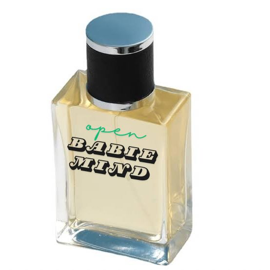

เกี่ยวกับเรา
รายละเอียดข้อมูลสินค้าหรือบริการจะปรากฏที่นี่
ใครที่ชอบกลิ่นโทนซีตรัสสดชื่นๆ ควรมีน้ำหอมรุ่นนี้ติดตู้ไว้ โดยมากกลิ่นแนวซีตรัสมักไม่ติดทน แต่น้ำหอมรุ่นนี้ที่นอกจากกลิ่นจะสดชื่น
คลาสสิค ใช้ได้หลายโอกาสแล้ว ยังกระจายกลิ่นดีและหอมติดทนเกินหน้าเกินตากลิ่นแนวซีตรัสรุ่นอื่นด้วย
เนื้อกลิ่นเหมาะกับอากาศร้อนบ้านเรา ใช้ง่าย ใช้ได้ทั้งในวันทำงานและวันสบายๆ เป็นน้ำหอมที่เรียบง่ายแต่มีดีในตัวมากมายเลย
รายละเอียดระดับการบริการ
ราคา
300-1,000 บาท